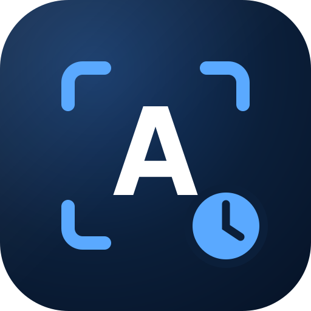

Amajing Timestamp
Foto selfie dengan jam, tanggal, dan lokasi untuk absen atau laporan kunjungan ke grup kantor.
Aplikasi akan meminta izin kamera dan lokasi. Foto tidak diunggah ke mana pun — hanya tersimpan di HP-mu.

Foto selfie dengan jam, tanggal, dan lokasi untuk absen atau laporan kunjungan ke grup kantor.
Aplikasi akan meminta izin kamera dan lokasi. Foto tidak diunggah ke mana pun — hanya tersimpan di HP-mu.
Jam diambil dari jam HP. Alamat dari OpenStreetMap (perlu internet); tanpa internet hanya koordinat yang tampil.